의공기사 (2009-08-30 기출문제)
1과목: 기초의학 및 의공학
1. 다음 그림에서 초음파 혈류계를 이용하여 혈류의 속도를 측정하는 메커니즘에 대해 잘못 설명한 것은?
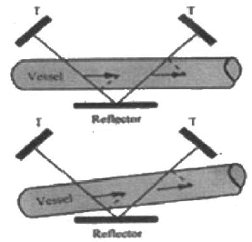
- 두 개의 초음파 송수신 장치(T)와 한 개의 반사판(Reflector)으로 구성되어 있다.
- 초음파가 반사판을 통과한 후 들어오는 각도를 계측한다.
- 한 쪽의 초음파 송신장치를 출발한 초음파가 혈관과 반사판을 지나 수신 장치에 들어올 때까지의 진행시간을 계측한다.
- 그림과 같은 초음파 혈류계를 사용하여 혈류량을 계측할 때는 프로브 내부를 통과하는 혈류의 단면에 대한 대략적인 정보가 필요하다.
(정답률: 83%)

2. 의료용 센서를 일반 센서와 비교할 때 추가적으로 고려해야 할 사항에 속하는 것은?
- 감도
- 동작범위
- 복귀도
- 안전성
(정답률: 85%)
3. 다음 설명의 ( )안에 알맞은 단어는?
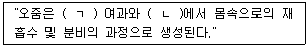
- (ㄱ) : 세뇨관, (ㄴ) : 사구체
- (ㄱ) : 사구체, (ㄴ) : 세뇨관
- (ㄱ) : 보우만 주머니, (ㄴ) : 세뇨관
- (ㄱ) : 보우만 주머니, (ㄴ) : 사구체
(정답률: 88%)
4. 심장과 관련된 설명 중 틀린 것은?
- 좌심방, 좌심실, 우심방, 우심실의 벽 중에서 좌심실의 벽이 가장 두껍다.
- 심근의 활동전위는 골격근의 활동전위보다 기간이 길다.
- 심장근 활동전위 곡선에서 고평부(Plateau)가 생기는 것은 Fe의 작용 때문이다.
- 심장의 흥분과정이나 그 전도과정에 이상이 발생하여 심장 리듬에 이상이 생긴 경우를 부정맥이라 한다.
(정답률: 79%)
5. 다음 중 휴지기 전위를 조정하는 메커니즘이 아닌 것은?
- Na+ 이온보다 K+ 이온을 더 잘 통과 시킨다.
- 삼투 현상에 의해 이온을 이동시켜 준다.
- 크기가 큰 음전하의 단백질은 세포막을 통과할 수 없다.
- Na+/K+ 펌프는 Na+ 이온 3개를 내보낼 때 K+ 이온 2개를 들여온다.
(정답률: 77%)
6. 센서 중에서 광전효과를 사용하여 빛을 감지하며 광전자 방출용 음극(photocathode)과 여러 개의 전자방출용 전극인 다이노드(dynode), 2차 전자를 수집하는 양극의 plate가 진공관 안에 봉입된 구조로 이루어진 센서는?
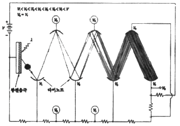
- 포토다이오드(photodiode)
- 광전관(phototube)
- CdS셀
- 광전자 증배관(photomultiplier)
(정답률: 88%)
7. 뇌파에 대한 설명으로 틀린 것은?
- 신경흥분 전달물질은 acetycholine이다.
- 하나의 파(주기)의 산과 산, 계곡과 계곡 사이를 연결한 것을 주기라 한다.
- 뇌파의 진폭은 보통 [μV]로 나타낸다.
- 모든 신경섬유는 수초로 둘러싸여 있다.
(정답률: 83%)
8. 다음 중 신장의 기능이라고 볼 수 없는 것은?
- 혈압 조절
- 산 염기 평형유지
- 당원질 합성 및 분해
- 체액 및 전해질 조절
(정답률: 62%)
9. 다음은 해부학적 방향에 대한 용어설명이다. 해당하는 방향은?
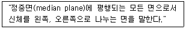
- 관상면(coronal plane)
- 시상면(sagittal plane)
- 이마면(frontal plane)
- 가로면(transverse plane)
(정답률: 90%)
10. 평형 휘스톤 브리지(Balanced wheatstone bridge)회로에 대한 설명으로 틀린 것은?
- 미지의 저항과 기준 저항과의 저항값의 차를 구하는 용도로 사용된다.
- 측정대상 저항과 회로의 저항 3개로, 총 4개의 저항으로 구성된다.
- 회로를 구성하는 3개의 저항은 기준 저항과 같은 저항값을 갖도록 구성된다.
- 측정 전압은 측정 대상 저항의 저항값에 반비례한다.
(정답률: 75%)
11. 전극을 사용하여 보다 정확한 생체전기신호를 얻기 위한 방법으로 옳지 않은 것은?
- 표피 각질층을 벗긴다.
- 피부에 상처를 낸다.
- 주위조건을 건조하게 한다.
- 염화이온을 이용한 젤 형태의 전해질 크림을 사용하여 접촉상태를 좋게 한다.
(정답률: 84%)
12. 다음 중 전해질 겔(Electrolyte gel)의 역할로 틀린 것은?
- 전극과 피부사이에 절연층을 만든다.
- 전극과 피부간의 전기적 저항을 줄인다.
- 전극과 피부간의 전기적 접촉 상태를 좋게 유지한다.
- 피부 각질층의 전기 전도도를 증가시킨다.
(정답률: 82%)
13. 일회용 금속판 전극(Disposable electrode)의 사용 방법 중 틀린 것은?
- 전극 부착면을 먼저 깨끗이 한다.
- 전극의 전해질 보호 필름을 제거하고 부착한다.
- 전극이 쉽게 움직일 수 있도록 전극선을 연결한다.
- 전해질이 마르지 않도록 한다.
(정답률: 84%)
14. 열전대(Thermo couple)에 대한 설명으로 틀린 것은?
- 지벡(seeback)효과를 이용한다.
- 온도를 측정하기 위해 사용한다.
- 한 종류의 금속을 사용한다.
- 내구성이 좋아 극한 상황에서 많이 이용된다.
(정답률: 83%)
15. 흡착전극(suction electrode)에 대한 설명 중 틀린 것은?
- 동작음(motion artifact)이 비교적 크다.
- 탈부착 작업이 간단하다.
- 피부 표면에 부착하는 전극이다.
- 장시간 사용에 적합하다.
(정답률: 88%)
16. 심전도의 표준사지유도 중에서, 왼발 전극에 양극을, 오른손 전극에 음극을 주고 두 지점간의 전위차를 기록하는 유도는?
- 제1유도(Lead Ⅰ)
- 제2유도(Lead Ⅱ)
- 제3유도(Lead Ⅲ)
- aVF 유도
(정답률: 76%)
17. 용량성 센서에서 축전기의 정전용량을 변화시키는 방법이 아닌 것은?
- 두 평행판 사이의 간격을 변화시킨다.
- 두 판이 마주하고 겹치는 면적을 변화시킨다.
- 평행판 사이에 유전체를 삽입한다.
- 평행판에 전압을 가한다.
(정답률: 83%)
18. 반도체의 접합부에 빛이 조사되면 전자와 정공의 흐름이 생겨 기전력이 발생하는 현상은?
- 광도전 효과
- 광전자 방출 효과
- 집전효과
- 광기전력 효과
(정답률: 88%)
19. 다음 중 근육내에 존재하는 직접적, 간접적 에너지원이 아닌 것은?
- 당원(Glycogen)
- 아세틸콜린(Acetylcholine)
- 크레아틴 인산염(CP : Creatine phosphate)
- 아데노신 3인산염(ATP : Adenosine triphosphate)
(정답률: 73%)
20. 센서에서 단위 입력변화에 대하여 출력이 얼마나 변화될 것인가를 나타내는 것은?
- 정밀도
- 감도
- 스팬
- 오차
(정답률: 83%)
2과목: 의용전자공학
21. 다음 중 신호 x(t)를 한 번 적분하였을 경우, 퓨리에(Fourier) 변환된 X(jω)의 주파수 변화의 표현이 옳은 것은?
- jωX(jω)
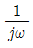
X(jω)- ω2X(jω)
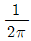
X(jω)
(정답률: 85%)
22. 다음 중 생체계측기기의 성능을 정량적으로 나타내기 위한 정적특성에 대한 설명으로 옳은 것은?
- 정확도는 참값과 측정된 값과의 차이를 측정값으로 나눈 것으로 나타낸다.
- 정밀도는 측정치를 표시할 수 있는 유효숫자의 범위를 나타낸다.
- 해상도는 측정될 수 있는 최대의 증감치를 나타낸다.
- 재현성은 정확성을 나타낸다.
(정답률: 67%)
23. 다음 그림과 같은 회로에서 AC단자에 ν = Vmsinωt [V]를 공급했을 때 AB 양단의 전압 [V]은 얼마인가?
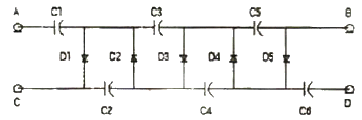
- 3Vm
- 4Vm
- 5Vm
- 6Vm
(정답률: 82%)
24. 다음과 같은 진리표(truth table)에 따라 동작하는 소자는?
- 인코더
- 디코더
- 멀티플렉서
- 디멀티플렉서
(정답률: 77%)
25. 다음 중 저항 30[Ω]과 유도리액턴스 40[Ω]을 직렬로 접속한 후 100[V]의 전압을 인가할 때 회로에 흐르는 전류[A]는?
- 2[A]
- 3[A]
- 4[A]
- 5[A]
(정답률: 75%)
26. 다음 중 자속밀도의 단위가 아닌 것은?
- [Wb/m2]
- [Mx/cm2]
- [G]
- [T/m2]
(정답률: 71%)
27. 10진수 23과 -46을 2의 보수 표현 방법에 이해 8bit로 표현한 것은?
- 10010111, 01101001
- 00010111, 11010010
- 00110111, 11001001
- 10110111, 01001001
(정답률: 82%)
28. 라디오 같은 동조 회로의 특수 분야에 사용되며 출력신호에 포함된 고조파를 제거하기 위해 공진형 부하를 사용하는 것은?
- A급 증폭기
- B급 증폭기
- C급 증폭기
- D급 증폭기
(정답률: 77%)
29. 호흡기의 기능평가를 위해 측정이 필요한 생체변수가 아닌 것은?
- 기체농도
- 폐용적(부피)
- 골밀도
- 기체압력
(정답률: 90%)
30. 다음 중 커패시터 필터에 관한 설명으로 틀린 것은?
- 맥동률
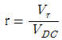
이다. (여기서 Vr은 리플전압의 실효값이며 VDC는 필터의 직류전압의 평균값이다.) - 리플이 클수록 효율적인 필터이다.
- 커패시터의 용량을 크게 하면 출력전압은 직류에 가까워 진다.
- 커패시터의 충전과 방전에 의한 출력전압의 변동이 리플전압(ripple voltage)이다.
(정답률: 85%)
31. 다음 펄스변조 방식 중 디지털변조(불연속레벨변조) 방식이 아닌 것은?
- PCM(Pulse Code Modulation)
- PNM(Pulse NUmber Modulation)
- PFM(Pulse Frequency Modulation)
- DM(Delta Modulation)
(정답률: 73%)
32. 다음 중 달링톤 트랜지스터의 설명으로 옳은 것은?
- 베이스에서 본 입력임피던스가 매우 작다.
- 항상 3개의 트랜지스터로 이루어져 있다.
- 합성 전류이득이 두 트랜지스터 전류이득의 곱으로 매우 크다.
- 실리콘 트랜지스터의 경우 VBE = 0.7V이다.
(정답률: 64%)
33. 다음 중 생체신호 측정시 고려사항이 아닌 것은?
- 인체에 주는 위험 피해를 최소화 하도록 한다.
- 계측은 온도, 습도, 소음, 멸균 등과는 무관하므로 신경 쓰지 않아도 된다.
- 측정신호외의 잡음을 제거해야 한다.
- 정확한 센서 부착위치와 계측기의 조작방법을 습득해야 한다.
(정답률: 93%)
34. 다음 중 이상적인 연산 증폭기의 특징으로 잘못 표현된 것은?
- 입력 바이어스 전류, 오프셋 전류, 오프셋 전압이 0 이다.
- 주파수 대역폭이 직류에서부터 무한대까지이다.
- 전압 이득(AV)이 무한대이다.
- 출력 임피던스는 무한대이다.
(정답률: 75%)
35. 마이크로프로세서 내에 있는 레지스터로서 프로그램을 구성하고 있는 명령어들의 실행순서로 지정하여 주는 것은?
- 명령레지스터
- 번지레지스터
- 프로그램카운터
- 누산기
(정답률: 80%)
36. 다음 중 성장의 특성과 가장 거리가 먼 것은?
- 자동성
- 흥분성
- 활발성
- 수축성
(정답률: 61%)
37. 심전도 같은 생체계측시스템에서 장비 자체의 성능을 바꾸어 출력에 간접적으로 영향을 주는 원하지 않는 입력을 무엇이라 하는가?
- 원하는 입력
- 간섭 입력
- 반대 입력
- 변형 입력
(정답률: 72%)
38. 다음 중 점 A에서 점 B로 20[C]의 전하를 옮기는 데 60[J]의 에너지가 필요하다면 두 점 사이의 전압은?
- 1[V]
- 2[V]
- 3[V]
- 4[V]
(정답률: 92%)
39. 다음의 정보통신용 버스 중 병렬전송이 아닌 것은?
- VME bus
- Multi bus
- RS-232c
- IEEE-488 bus
(정답률: 82%)
40. 다음 중 정전용량이 C인 콘덴서의 극판사이에 비유전율이 8인 유전체를 제거하고 공기로 채웠을 때의 용량을 C0 라고 하면 C와 C0의 관계는?
- C = 8 C0
- C = 4 C0
- C = C0 / 8
- C = C0 / 4
(정답률: 82%)
3과목: 의료안전·법규 및 정보
41. 접촉 특성에 따라 의료기기를 분류할 때, 뼈, 조직, 혈액과 같은 인체에 접촉하는 의료기기는?
- 제한접촉형 의료기기
- 표면접촉형 의료기기
- 체내외 연결형 의료기기
- 체내 이식형 의료기기
(정답률: 84%)
42. 환자에게 열을 주는 것을 의도하지 않는 의료기기의 장착부 표면온도가 초과해서는 안 되는 기준온도는?
- 41℃
- 43℃
- 45℃
- 47℃
(정답률: 85%)
43. PACS에서 사용하는 서로 다른 의료영상 장비들에서 나오는 다양한 영상형태를 실시간 교환하기 위한 표준 프로토콜은?
- HL7
- KS
- ANSI
- DICOM
(정답률: 78%)
44. 다음 중 의료기기감시원이 자격이 있는 자는?
- 10년 이상 경험이 있는 대학 교수
- 1년 이상 보건의료행정에 관한 업무에 종사한 경험이 있는 소속 공무원
- 5년 이상 경험이 있는 의료기기 판매업자
- 3년 이상 경험이 있는 병원 의사
(정답률: 87%)
45. 환자를 중심으로 수평으로 몇 m의 공간과 수직으로 몇 m의 공간을 보통 환자 환경이라고 하는가?
- 수평 : 1m, 수직 : 1m
- 수평 : 2.5m, 수직 : 2.3m
- 수평 : 5m, 수직 : 5m
- 수평 : 10m, 수직 : 12m
(정답률: 89%)
46. 의료정보 용어 및 분류체계에 대한 설명 중 틀린 것은?
- 환자기록을 재구성하기 위해서는 공통된 용어로 된 기록이 필요하다.
- 임상연구 등의 대규모 자료처리를 위해서는 코드화가 필요하다.
- 코드화를 하면 코드만 보고도 의료기록을 쉽게 이해할 수 있다.
- 코드를 사용하면 약어의 사용 등으로 인한 환자기록의 모호성을 제거할 수 있다.
(정답률: 82%)
47. 의료기기 생물학적 안전성 시험 중 ISO 규격에서 지정한 이식시험이 필요한 경우에 해당하는 것은?
- 인체의 혈액에 접촉되어 24시간 이내 이식되는 의료기기
- 30일 이상 간접적인 혈액경로로 접촉되며 인체에 삽입되는 의료기기
- 30일 이상 인체의 파열된 표면 또는 외상 표면에 접촉되는 의료기기
- 24시간에서 30일 사이에 인체의 조직, 뼈 및 상아질에 접촉되어 삽입되는 의료기기
(정답률: 78%)
48. 데이터마이닝(Data mining)의 특징 설명으로 틀린 것은?
- 세 집단 이상의 변수간의 관계를 설명하는 방법이다.
- 일반화(general ization)에 초점을 두고 있다.
- 경험적 방법에 근거하고 있다.
- 대용량의 관측 가능한 자료를 다룬다.
(정답률: 70%)
49. 복합구성의료기기의 품목허가 또는 신고 규정 중 틀린 것은?
- 품목명은 복합 구성된 의료기기의 주된 사용목적 또는 기능을 발휘하는 의료기기로 분류한다.
- 복합 구성된 각 의료기기의 등급이 다를 경우에는 그 의료기기 중 가장 낮은 위해도의 등급으로 분류한다.
- 품목허가를 받거나 신고 시에는 복합 구성된 각각의 의료기기에 대한 분류번호, 제품명(품목명 및 형명), 등급을 모두 기재하여야 한다.
- 품목명은 중분류명도 사용할 수 있다.
(정답률: 79%)
50. 의료기기 안전성, 유효성 심사에 관한 자료 중에 임상시험 성적에 관한 자료에 반드시 포함되어야 할 내용에 해당되지 않는 것은?
- 임상시험대상 의료기기의 제조번호
- 기존 다른 유사 의료기기와의 유효성 비교
- 임상시험 방법
- 증례기록 요약
(정답률: 70%)
51. 다음 중 추적관리대상 의료기기의 지정 대상이 아닌 것은?
- 응급시 착용하는 인공호흡기
- 이식형 인공심장 박동기
- 인공심장판막
- 이식형 의약품주입기
(정답률: 87%)
52. 다음 중 HL7의 메시지 구조가 아닌 것은?
- 송수신 일자
- 세그먼트
- 메시지
- 필드
(정답률: 79%)
53. 보편적인 의료가스 중에서 특정고압가스로 분류되는 의료가스는?
- 질소
- 액화산소
- 탄산
- 헬륨
(정답률: 77%)
54. 다음 보기 중 의료인의 의무에 해당하는 것을 모두 골라 나열한 것은?
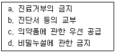
- b, c, d
- a, b, c
- a, b, d
- b. d
(정답률: 83%)
55. 휴대형 의료기기의 기계적 안전을 위한 낙하시험에서 기기의 중량별 낙하높이가 옳지 않은 것은?
- 7kg - 5cm
- 30kg - 4cm
- 45kg - 3cm
- 70kg - 2cm
(정답률: 78%)
56. 다음 중 의료기사, 의무기록사 보수교육에 대한 설명으로 옳은 것은?
- 보수교육 관련 서류는 1년간 보존해야 한다.
- 의료기사 및 의무기록사의 자질향상을 목적으로 한다.
- 교육기간은 연간 5시간 이상으로 한다.
- 각 해당 단체로 하여금 실시할 수 없다.
(정답률: 77%)
57. 다음 분류체계 중 환자기록을 추출해 내기 위해 제정되고 세계보건기구(WHO)에서 관리되는 국제질병 분류 코드는?
- CPT
- ICD
- ICPM
- RCC
(정답률: 84%)
58. 다음 중 원격의료의 활용 분야와 가장 거리가 먼 것은?
- 재택 진료
- 정확한 진료
- 인터넷 가상병원
- 원격영상진단
(정답률: 87%)
59. 레이저 등급에 대한 설명 중 틀린 것은?
- 등급 1M : 광학기기로 레이저광을 보거나 조사하면 위험하다.
- 등급 2 : 눈에 레이저광이 조사될 때 0.25초의 눈깜빡임으로 보호될 수 있다.
- 등급 38 : 눈에 레이저광이 직접 조사되면 위험하다.
- 등급 4 : 인체에 레이저광이 직접 또는 방사되어 조사되면 위험하다.
(정답률: 73%)
60. 전자파에 의한 잡음의 종류와 그 발생 원인의 연결이 틀린 것은?
- 저주파 잡음 - 형광등
- 충격파 잡음 - MRI
- 고주파 잡음 - Surgical Laser
- 자기잡음 - Motor
(정답률: 78%)
4과목: 의료기기
61. 다음 중 인큐베이터에서 일어나는 현상이 아닌 것은?
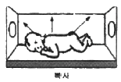
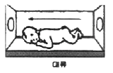
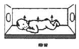
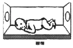
(정답률: 84%)
62. IT가 급격하게 발달하면서 재택진료에 유비쿼터스의 개념은 점점 중요성을 더해가고 있다. 유비쿼터스의 3A와 관계가 없는 것은?
- Anywhere
- Anycall
- Anytime
- Anydevice
(정답률: 85%)
63. MRI영상장치에서 자기공명을 위한 고주파 발신과 생체에서의 MR신호를 수신하기 위한 구성 요소로 맞는 것은?
- RF코일
- shim코일
- gradient코일
- super conductor코일
(정답률: 83%)
64. IABP(Intra Aortic Balloon Pump)의 심기능 보조원리 설명으로 틀린 것은?
- 탄성막이 있어 압축 공기가 혈액을 짜냄
- 심장의 산소 소비량 감소
- 심박출량 증가
- 관상동맥 혈류량의 증가
(정답률: 66%)
65. CT에서 MTF(Modulation Transfer Function)가 나타내는 성능지표는?
- 선형성
- 대조도(contrast)
- 잡음성능
- 공간해상도
(정답률: 78%)
66. 선형가속기에서 일반적인 치료용으로 사용되는 X-선 에너지의 크기는?
- 4 ~ 15 MV
- 30 ~ 50MV
- 80 ~ 100MV
- 130 ~ 150MV
(정답률: 71%)
67. PET에서 사용하는 방사성 동위원소가 붕괴할 때 발생하는 감마선 광자의 에너지는?
- 약 0.1MeV
- 약 0.3MeV
- 약 0.5MeV
- 약 1.0MeV
(정답률: 68%)
68. 혈액투석에서 용질 제거 방법만으로 나열된 것은?
- 확산, 초여과
- 확산, 대류
- 대류, 초여과
- 확산, 대류, 초여과
(정답률: 85%)
69. 수액펌프에는 주로 알람기능이 첨부되어 있는데, 이러한 알람의 경보사항이 될 수 없는 것은?
- 챔버에 약물방울이 규칙적으로 떨어지는 경우
- 회로에 과부하 발생시
- 수액내 기포 발생시
- 설정된 값에 따라 약물이 다 주입된 상태
(정답률: 86%)
70. 다음 중 청력검사를 위한 신호음으로 적당한 파형은?
- 구형파
- 삼각파
- 사인파
- 톱니파
(정답률: 76%)
71. X-선 발생 장치를 3부분으로 나눌 때, 해당되지 않는 것은?
- X-선관
- 고전압 발생장치부
- 촬영부
- 제어장치부
(정답률: 79%)
72. X-선 진단장치의 특징이 아닌 것은?
- 진단영역에서 사용하는 저에너지 X-선에서는 컴퓨터 산란, 간섭성 산란, 광전효과가 대부분이다.
- X-선이 인체를 투과할 때 조직에 따라 흡수나 산란이 다르기 때문에 X-선 영상의 명암 차가 생긴다.
- 단단한 조직에서 유발하는 병변의 검출보다 뇌, 근육과 같은 연부조직에서의 병변 검출 정확도가 훨씬 높다.
- 기존의 필름이나 스크린 시스템이 아닌 모니터에 직접 영상을 표시할 수 있는 디지털 영상도 가능하다.
(정답률: 89%)
73. 혈압 측정법에 대한 설명으로 맞는 것은?
- 혈압의 간접측정법은 혈압을 침습적(invasive)으로 측정하는 방법이다.
- 직접혈압측정법을 이용하기 위해서는 카테터(catheter)와 커프가 필요하다.
- 촉진법으로 측정시 맥박이 처음 감지할 때의 압력이 수축기혈압이다.
- 혈압의 간접적인 표시수단으로 커프의 진동음을 이용하는 방법을 청진법이라 한다.
(정답률: 59%)
74. aVR, aVL, aVF 등으로 표기되는 생체 신호와 측정방법이 맞게 짝지어진 것은?
- 안전도, 표준사지유도
- 심전도, 증폭사지유도
- 심전도, 흉부유도
- 안전도, 흉부유도
(정답률: 83%)
75. 임상검사기로 사용되는 분광광도계와 그 원리에 관한 설명으로 적절하지 못한 것은?
- 혈청, 소변, 척수액 등에는 시약을 첨가하여 검사한다.
- 임상물질들은 광 에너지를 선택적으로 흡수나 방출한다.
- 광선으로 X-선을 사용한다.
- 특정 물질의 에너지 흡수 정도를 측정하여 농도를 알아 낸다.
(정답률: 82%)
76. 다음 중 인공심폐기의 구성요소가 아닌 것은?
- 혈구와 혈장 분리기
- 저혈조(blood reservoir)
- 정맥 cannula
- 혈액펌프
(정답률: 84%)
77. 다음 중 마취제로 사용되는 것이 아닌 것은?
- 에테르
- 피라비탈
- 메틸헥사비타르
- 에페드린
(정답률: 72%)
78. 초음파가 매질 1에서 매질 2로 두 매질 사이의 경계면을 수직으로 입사할 때 경계면을 투과하는 음파강도는? (단, 매질 1에서의 음향임피던스는 1Rayl, 매질 2에서의 음향임피던스는 2RAyl이다.)
- 약 29%
- 약 49%
- 약 69%
- 약 89%
(정답률: 68%)
79. 체외충격파쇄석기의 에너지 발생원 중에서 세라믹소자에 고주파를 인가하여 발생하는 압력파를 이용하는 방식은?
- 압전소자 방식
- 수중방전 방식
- 미소발파 방식
- 전자진동 방식
(정답률: 84%)
80. 다음 중 산소포화농도측정과 관련 있는 법칙은?
- 광의 흡수에 관한 Beer의 법칙
- 광의 방출에 관한 Beer의 법칙
- 케겔 운동
- Imbert-Fick의 법칙
(정답률: 83%)
5과목: 의용기계공학
81. 높이 10m에서 질량 5kg의 공이 자유낙하로 떨어진다. 운동에너지와 위치에너지가 같아지는 점에서의 공의 속도는 약 몇 [m/s] 인가? (단, 공기저항은 무시한다.)
- 9.9
- 4.8
- 2.5
- 19.8
(정답률: 70%)
82. 다음 중 기어에 대한 설명으로 틀린 것은?
- 스퍼기어는 두 축이 서로 평행하다.
- 헬리컬 기어는 두 축이 서로 평행하지 않다.
- 웜기어는 두 축이 평행하지도 않고 만나지도 않는다.
- 베벨기어는 두 축이 서로 교차한다.
(정답률: 68%)
83. 정형외과적으로 사용되는 임플란트를 설계하기 위해서는 골(뼈) 조직의 기계적 특성을 파악해야 한다. 다음 중 골조직의 기계적 특성에 영향을 미치는 인자가 아닌 것은?
- 온도와 습도
- 인장 방향
- 측정하는 사람
- 골 조직 시편을 채취한 후 경과한 시간
(정답률: 88%)
84. 다음 중 저주파 영역에서 혈장, 전혈(헤마토크릿 40%) 및 적혈구의 전기 저항률이 높은 순서부터 나열된 것은?
- 적혈구 ＞ 전혈 ＞ 혈장
- 혈장 ＞ 적혈구 ＞ 전혈
- 전혈 ＞ 혈장 ＞ 적혈구
- 혈장 ＞ 전혈 ＞ 적혈구
(정답률: 84%)
85. 다음 중 체내에서 초음파에 의해 발생하는 캐비테이션 현상에 대해 잘못 설명한 것은?
- 초음파의 에너지 밀도가 1W/cm2 이상이 되면 기포가 발생한다.
- 발생된 기포는 양압기에 큰 충격을 주어 조직을 파괴한다.
- 혈액중의 기포에 초음파가 조사되면 순간적으로 기포가 소멸된다.
- 초음파 메스는 캐비테이션 성질을 응용한 의료장비이다.
(정답률: 79%)
86. 다음 중 생체에 대한 전기성질을 나타내는 물성치에서 그 크기 관계가 잘못된 것은?(오류 신고가 접수된 문제입니다. 반드시 정답과 해설을 확인하시기 바랍니다.)
- 고주파에서의 도전율 ＞ 저주파에서의 도전율
- 저주파에서의 도전율 ＞ 고주파에서의 도전율
- 세포내액의 도전율 ＞ 세포외액의 도전율
- 혈액의 도전율 ＞ 지방의 도전율
(정답률: 55%)
87. 다음 중 슬관절 최대굴곡으로부터 경골이 지면에 수직이 되는 시기는?
- 하중수용기
- 중간유각기
- 전유각기
- 중간입각기
(정답률: 78%)
88. 기어에서 압력각을 크게 하면 발생되는 효과로 옳은 것은?
- 언더컷이 심해진다.
- 물림률이 증가한다.
- 미끄럼률이 감소한다.
- 베어링에 걸리는 하중이 감소한다.
(정답률: 75%)
89. 다음 중 나사의 유효지름이 d 이고 리드가 L 일때 리드각은?
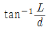
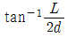
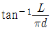
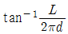
(정답률: 81%)
90. 다음 중 경골은 하지의 주요한 체중부하골이다. 만약 체중의 45%가 한쪽 슬관절 근위부에 있다면, 50kg의 사람이 해부학적 자세로 서 있을 때 양쪽 경골에 작용하는 압축력은 약 몇 [N] 인가?
- 400
- 440
- 520
- 550
(정답률: 75%)
91. 다음 중 생체재료의 기계적 특성을 평가하는 방법이 아닌 것은?
- 인장-압축 시험
- 피로 시험
- X-선 에너지 분산 분석 시험
- 크립 시험
(정답률: 75%)
92. 혈관의 직경이 1/2 이 되면, 혈관에 흐르는 유량은 어떻게 되는가? (단, 혈류는 정상적으로 흐르고 있다.)
- 4배로 많아진다.
- 변함이 없다.
- 1/4로 줄어든다.
- 1/16로 줄어든다.
(정답률: 79%)
93. 다음 중 체간보조기에 대한 설명으로 가장 거리가 먼 것은?
- 척주의 정렬유지 및 기형 교정
- 골반밴드, 흉추밴드, 후방지주, 외측지주 등으로 구성
- 3점 고정의 개념이 중요하다.
- 종류로는 경추보조기, 요천추, 흉 요천추보조기, 경흉 요천추보조기 등이 있다.
(정답률: 83%)
94. 다음 중 일반적으로 테플론(Teflon)으로 잘 알려져 있고 주로 인공혈관을 만드는데 이용되는 것은?
- PP(Polypropylene)
- Polyester
- PE(Polvethylene)
- PTFE(Polytetrafluoroethylene)
(정답률: 78%)
95. 다음 중 자세조절에 관한 감각기전이 아닌 것은?
- 시각
- 체성감각
- 청각
- 전정계로부터의 말초입력
(정답률: 83%)
96. 생체적합성을 평가하는 방법은 시험하는 조건에 따라서 구별될 수 있으며 세포증식이나 생체조직을 배양하여 생체적합성을 평가하고자 한다. 다음 중 어느 시험조건에 해당하는가?
- 시험관적 시험(In vitro test)
- 생체내 시험(In vivo test)
- 동물 시험(Animal test)
- 임상 시험(Clinical test)
(정답률: 84%)
97. 다음 방사선 단위 중 방사선이 어느 정도 흡수되었는가를 알고자 할 때 사용하는 것은?
- Rad
- R(Roentgen)
- Gy(Gray)
- Sv(Sivert)
(정답률: 31%)
98. 다음 중 자장 강도를 큰 순서부터 나열했을 때 옳은 것은?
- 심장의 자장 ＞ 폐의 자장 ＞ 뇌의 자장
- 뇌의 자장 ＞ 심장의 자장 ＞ 폐의 자장
- 폐의 자장 ＞ 심장의 자장 ＞ 뇌의 자장
- 심장의 자장 ＞ 뇌의 자장 ＞ 폐의 자장
(정답률: 74%)
99. 다음 중 의료용 재료 중 세라믹 재료가 가지는 특성으로 틀린 것은?
- 압축 강도가 강하다.
- 성형 및 가공이 용이하다.
- 불활성이다.
- 생체적합성이 우수하다.
(정답률: 78%)
100. 강하고 투명한 장점이 있고, 열적, 기계적 특성이 뛰어나 심혈관계 보조장기에 널리 응용되고 있는 것은?
- 폴리아세탈(Polyacetal)
- 폴리스티렌(Polystylene)
- 폴리카보네이트(Polycarbonate)
- 폴리액틱에이시드(Polylacticacid)
(정답률: 76%)